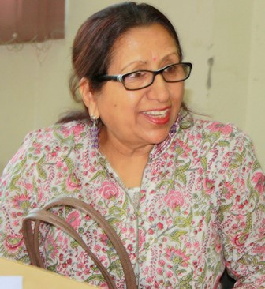
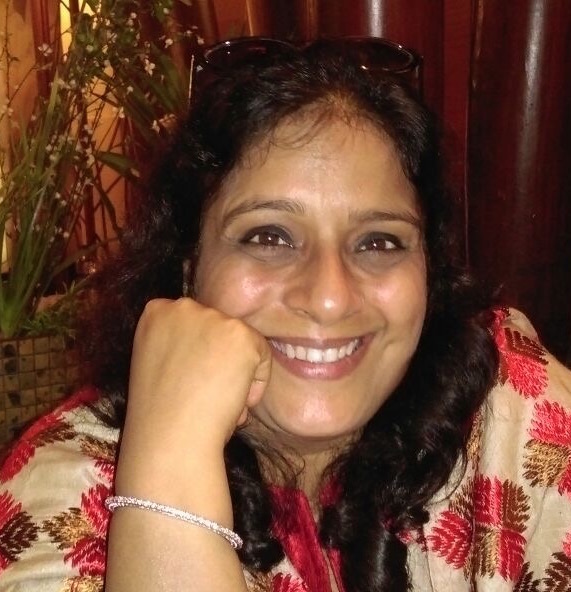

| |

|
Dr.Sushma Jaireth, Professor in Education
- Member of Curriculum Committee (National and International levels,CBSE)
- She has been involved in Textbook Analysis of Science and Maths books
of all levels in the State and at NCERT
- Senior Consultant in the Department of Education in Social Sciences,
NCERT (2012)
- Lecturer in the Department of Science-Zoology section, NCERT,
Bhubaneswar (1987 -1989)
- Program Co-ordinator in national level projects for Evaluation
of Incentive Schemes, Central Sector Schemes,Appraisal Missions
of Sarva Shiksha Abhiyan (SSA) of Government of India
- Reader, Associate Professor and Professor in the Department of
Gender Studies, NCERT, New Delhi (1989 to 2011)
- Senior Fellow in Jawaharlal Nehru University, New Delhi (1978)
- Post Doctoral Fellow in Delhi University (1979)
- Research Associate and Research Scientist in IIT Roorkee (1980-1986),
Visitor in the Laboratories of JCSMR, Australian National University,
Canberra (1986-1987)
- Tutor in the Department of Zoology,University of Queensland
|
|

|
Dr.Vandana Mehta
She is
originally from New Delhi and now a successfull Doctor based in Mumbai.She has won
many hats over the last decade.She is a
homemaker,a mother, a teacher, a doctor,
a motivational speaker and an advisor.She has been involved as an advisor for
Educational
and Extra-Curricular activities, with Swayamsiddh, a school for
Special Children, in Aurangabad since 2008.She believes that education
has to be made
fun and interesting along with Extra-Curricular activities for a child to enjoy
studying, which in turn goes a long way in
making the child a well-rounded and a
well-educated human being.
|